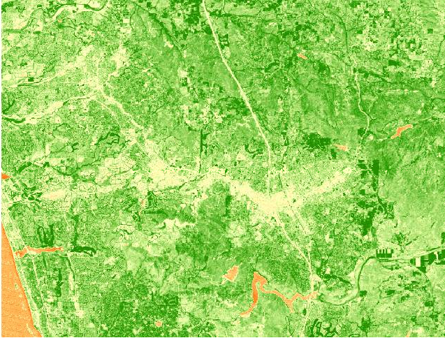

Our next task is to use NDVI to visualize how the greenness of the vegetation changes from the spring to the fall in our area.
|
1. For the last two activities, we'll be working with some tools that are used for doing various image analysis operations. These are all available in the Image Analysis window, which we need to open up first. Select Windows → Image Analysis from the menu. You'll see that when the Image Analysis window open up, it has your composite_november_2011.img showing in the file list at the top of the window. |
|
| 2. Calculating NDVI is very simple in ArcMap - select the image file, and then click on the NDVI button (the little maple leaf). |
The NDVI_composite_november_2011.img that results looks like this:
Before you move on to Step 2, spend a little time looking at what kind of cover type these colors correspond with. The simplest way to do this is to "swipe" the NDVI to reveal the high resolution Imagery layer underneath an area of interest.
| 1. Turn off (by un-checking the box next to) the composite_november_2011.img file. In the Image Analysis window, select your new NDVI_composite_november_2011.img file, and then click on the "Swipe layer" button. | |
| 2. Now, click and hold anywhere on your NDVI image, and you'll see that it removes the NDVI layer from your pointer to the left, or to the bottom. Keep holding, and move the pointer around - you'll see you can now "swipe" the NDVI image back and forth, to see the high-resolution image behind it. |
We're expecting that NDVI is measuring greenness of vegetation rather than finding objects with a green color. We can check this by looking at the athletic fields at CSUSM, which should have high NDVI (since they are grass fields), and at the football field at MHHS, which should have low NDVI (since it's astroturf). You can zoom to the Landmarks layer, and then swipe the NDVI layer at each school and see if you get green NDVI pixels over the fields at CSUSM, and not green pixels over the field at MHHS.
Now, do some panning, zooming, and swiping to find features like:
Not too surprisingly, open water and un-vegetated areas like shopping malls have low NDVI, and golf courses have high NDVI. Undeveloped lands are variable - some have high NDVI, but some have moderate to low NDVI depending on the kind of vegetation. For example, grasses and herbaceous annual plants grow fast during the spring rains, but they set seed and die back by November; any grassland areas will have low NDVI in the fall. On the other hand, shrubs and trees aren't as green at the peak of the spring growing season, but since they have deeper roots and can reach water that's below the surface they will have higher NDVI in the fall than grasses.
In the next step we will repeat this NDVI calculation procedure for an image recorded in April 2011, during the rainy season.